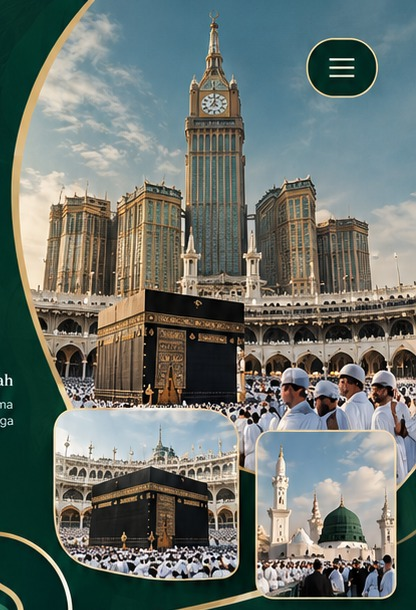

Exclusive
Menghadirkan pengalaman umrah yang istimewa dan personal.
SAHABAT PERJALANAN IBADAH ANDA
Temani perjalanan ibadah Anda dan keluarga dengan pelayanan yang hangat, nyaman, dan terpercaya.

TRAVEL UMROH & HAJI
“Your Family, Your Journey, Your Sacred Moments.”
Perjalanan Istimewa, Ibadah Penuh Makna,
Kenangan Bersama Keluarga.
Menghadirkan pengalaman umrah yang istimewa dan personal.
Mengutamakan kenyamanan keluarga sepanjang perjalanan ibadah.
Menciptakan kenangan spiritual yang berkesan dan tak terlupakan.
CERITA DARI TANAH SUCI
Mengabadikan langkah ibadah, kebersamaan, dan kenangan indah di Tanah Suci.